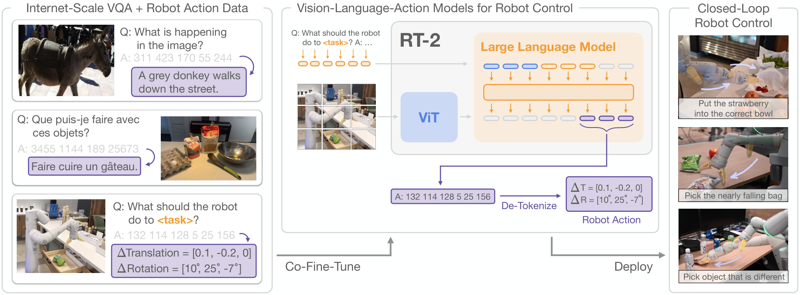

RT-2
把动作也当成模型要预测的 token，让网络语义知识参与机器人控制。
RT-2: Vision-Language-Action Models Transfer Web Knowledge to Robotic Control
未见条件平均成功率：RT-1 32%，两种 RT-2 均为 62%；新语义能力测试中 PaLI-X 版为 60%。
01这篇要解决什么？
前面的论文大多让 LLM 指挥一个外部执行器。RT-2 要理解的是执行器本身怎样吸收视觉语言知识：把预训练 VLM 接着训练成能输出机器人动作的模型，形成 VLA。它是理解后续“冻结 VLA + 外部 Agent”的基础。
02先看一个场景
指令是“把苹果移到二加一的地方”，桌上摆着写有数字的卡片，而机器人演示数据里从未出现过数字卡片。做成这件事既需要知道 2+1 等于 3、认出 3 号卡片，也需要输出能把苹果挪过去的连续动作；只用机器人数据训出来的策略没有前一半知识。
03方法怎样运转？

- 01
先选定两个现成的视觉语言模型当主干
论文接的是 PaLI-X（图像侧 ViT-22B，文本侧 32B、50 层的 encoder-decoder，实验用 5B 与 55B 两档）和 PaLM-E-12B（decoder-only，图像侧 ViT-4B）。两者都不是为机器人设计的。RT-2 不引入任何新参数，也不在策略里加动作专用层，只是把这两个模型接着训练成能输出动作，论文把这一类模型称作 VLA。
- 02
动作离散成 token，占用模型原有的词表
动作空间沿用 RT-1：末端 6 自由度的位移与旋转、夹爪开合程度，外加一个离散的终止指令，共 8 维。除终止外的连续维度各均匀离散成 256 个 bin，一条动作因此写成几个整数拼成的字符串（论文给的样例是 1 128 91 241 5 101 127）。占用哪些 token 取决于分词器：PaLI-X 中 1000 以内的整数各有专属 token，直接对应；PaLM-E 没有这种表示，就覆写 256 个最少使用的 token。训练样本按 VQA 格式写成 Q: what action should the robot take to [指令]? A:。
- 03
共同微调：机器人数据与网页数据放进同一批次
训练目标就是 next token prediction，在机器人这边等价于行为克隆损失。机器人数据沿用 RT-1 那批用 13 台机器人、17 个月在办公室厨房采集的演示；网页侧是 PaLI-X 与 PaLM-E 原本的混合（主体是 WebLI 等图文数据）。机器人数据的采样权重被调高，在 RT-2-PaLI-X 中约占训练混合的 50%，在 RT-2-PaLM-E 中约占 66%。消融显示只用机器人数据微调、或完全从零训练，泛化都明显更差。
- 04
推理：约束词表、云端出 token、解码后闭环执行
当提示属于机器人动作任务时，采样被限制在合法动作 token 上；模型在做通用视觉语言任务时仍可输出全部自然语言 token。模型太大跑不进机上算力，论文把它部署在多 TPU 云服务上由机器人联网查询，55B 版约 1–3 Hz，5B 版约 5 Hz。每个控制周期读一次图像与指令、出一串 token、解码成一次动作执行，直到模型自己输出终止维。
backbone = PaLI-X(5B/55B) 或 PaLM-E(12B) # 现成 VLM，不新增参数
# 动作编码 [terminate, Δpos xyz, Δrot xyz, gripper]，连续维各离散成 256 档
# 训练：机器人演示(约 50% / 66%) + 原网页视觉语言数据 → next token prediction
while True:
image = camera()
prompt = 'Q: what action should the robot take to ' + instruction + '? A:'
tokens = backbone.decode(image, prompt, vocab=仅 256 个动作 token)
a = detokenize(tokens) # 整数串 → 末端位移/旋转/夹爪/终止
if a.terminate: break
robot.execute(a) # 云端多 TPU 推理：55B 约 1-3 Hz，5B 约 5 Hz方法与结果的原文定位见本页引用。
04跟着这个场景走一遍
教学推演：回到上面的场景。第一步，起点不是一个机器人模型，而是一个已经在网页图文上训练过的视觉语言模型——它本来就认得数字、也会做这种算术，RT-2 要做的是让它学会说出动作。第二步，指令要变成动作，先得规定动作的写法：末端位移与旋转、夹爪、终止共 8 维，连续维度各切成 256 档，于是「向右前方移一点、夹爪保持闭合、尚未结束」被写成形如 0 132 140 126 128 128 130 255 的一串整数（这串数字是为说明编码格式而设的假设值，不是论文报告的动作）。第三步，模型既懂 2+1 又会输出这串整数，是因为共同微调把两类数据放进了同一批次：机器人演示约占一半（PaLM-E 版约三分之二），其余仍是它原来的网页视觉语言任务，损失只有一个 next token prediction。第四步，运行时提示被送进云端多 TPU 服务，采样限定在那 256 个动作 token 上，回传的字符串解码成一次末端位移，执行完再拍新图重复，直到终止维被置起。这里迁移过来的是「3 号卡片在画面的哪个位置」这类语义与视觉知识，被复用的仍是机器人数据里那七类技能（pick、move near、place upright 等）；论文明确指出网页知识不会让机器人学会新的运动。下一篇 Harness VLA 关心的正是：当策略本身的动作分布已经固定时，外层还能怎样改善它的表现。
05实验到底表现怎样？
论文报告逾 6000 次机器人评估，分别研究已见任务、未见物体 / 背景 / 环境，以及符号、推理、人物识别等语义测试。下表取附录表 6–7；不同列来自不同评估集合。
作者报告的实验结果 · v1
| 模型 | 已见任务 | 未见条件平均 | 新语义能力平均 |
|---|---|---|---|
| RT-1 | 92% | 32% | 17% |
| RT-2-PaLI-X-55B | 91% | 62% | 60% |
| RT-2-PaLM-E-12B | 93% | 62% | 40% |
原始证据：动作 token 与训练：§3 ↗ · 泛化与语义测试：附录 H 表 6–8 ↗ · 能力限制：§5 ↗
RT-2 的主要增益出现在泛化而非已见任务；已见表现没有全面碾压 RT-1。两种 RT-2 都是 62% 未见平均，却在语义测试上差异明显，也说明一个总体分数不能概括全部能力。
06收益来自哪里，又停在哪里？
消融与机制证据
附录表 8 比较从头训练、只用机器人数据微调、共同微调；5B 模型从头训练的泛化平均为 9%，共同微调为 44%。该表独立报告的数值与表 6 的汇总口径应分别引用。
结论的适用边界
模型来源要分两层看：主干是现成的通用视觉语言模型（PaLI-X 5B / 55B、PaLM-E 12B），不新增任何参数；但 RT-2 并不是冻结调用它们，而是把整个主干做了共同微调（55B 版学习率 1e-3、批大小 2048、训练 8 万步），机器人侧则直接沿用 RT-1 的演示集，没有另外训练低层控制器。所以这套系统的前提成本是一次大模型微调加上云端推理，而不是一个技能库。原文也明确指出：网页知识帮助重组已有运动技能，并未让机器人自动学会训练轨迹之外的新运动；55B 版只能跑到 1–3 Hz，控制频率本身也是限制。
07放回全书的脉络
后续 Harness VLA 研究的正是：已有策略具备局部运动能力时，外层 Agent 怎样把它放到更合适的状态再调用。
08把阅读变成一个小研究
用现有策略设计两类测试：只换目标物体的语义指代，以及保持语义但改变接触动作。分开统计两类泛化。
先自己回答：这项实验怎样才有解释力？
如果第一类改善而第二类不改善，就支持语义迁移的解释。把这两类都叫“未见任务”，会隐藏机制差异。
- 用自己的话说出这篇改变了哪个模块。
- 画出它的输入、输出和一次失败如何被处理。
- 复述一个结果，同时说清基线、指标与实验条件。这一问不给答案，材料在第 05 节。
先自己答，再看前两问的参考答案
这篇改了哪个模块改的是策略本身，不是外层编排。落点有两处：动作的输出形式，8 维动作被离散成整数 token、直接占用视觉语言模型原有的词表，动作预测于是和文本预测共用一个目标；以及训练数据的混合方式，共同微调把机器人演示与网页图文放进同一批次，损失只有一个 next token prediction。没有改的东西是理解这篇的关键——不新增参数、不加动作专用层，动作空间沿用 RT-1 的 8 维，机器人数据也直接沿用 RT-1 那一批，没有另外训练低层控制器，也没有技能库、外部规划器或执行后的反馈环。
输入、输出与一次失败如何被处理输入是每个控制周期拍到的一帧机器人相机图像，加上写成 VQA 格式的指令 Q: what action should the robot take to [指令]? A:；模型能看到的只有这张图和这句文本，没有本体状态，也没有技能菜单或历史反馈作为额外上下文。输出是一串整数 token，采样被限制在合法动作 token 上，解码回末端位移与旋转、夹爪开合以及一个离散的终止指令，直接下发给机器人执行，中间没有规划器或原语层接手；推理跑在多 TPU 云服务上由机器人联网查询，55B 版约 1–3 Hz、5B 版约 5 Hz，做完一次动作再重新拍图问下一次。失败处理这一条要明确写出来：这篇没有成功检测、没有重规划、也没有恢复动作，闭环只体现在每个周期重新观测一次。抓空或物体被碰倒之后能不能纠正，取决于新图像落在训练分布的哪个位置，系统里没有任何模块会判定上一步失败了，终止也由模型自己置起终止维决定。
把动作也当成模型要预测的 token，让网络语义知识参与机器人控制。
↗带着位置回到原文
首发日期用于时间排序；以下方法与结果对应 v1。数据为论文作者报告，本讲义没有独立复现实验。
QA就这一页提问或讨论
对某个数字、某条边界或某个推演有疑问，欢迎直接留言：讨论按页面分开，回复会保留在 XinrunXu/awesome-agentic-robotics-papers 的 Discussions 里，需要一个 GitHub 账号。